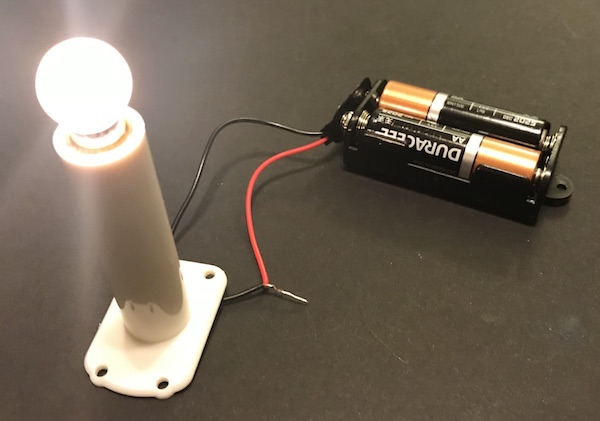
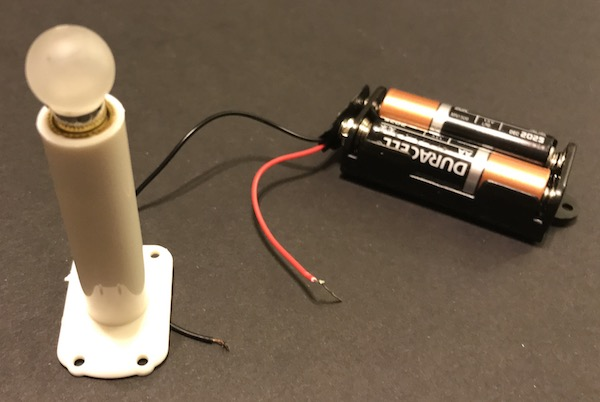

What’s a Switch?
Switches are found everywhere. A switch allows you to change from one thing to another. For example, you can switch a train from one track to another or you can switch your light on or off. In some cases, you can switch between more than one option, like an electric fan which could go fast, medium or slow.
How Does a Basic Circuit Work?
For an electric circuit to work, current has to flow in a circle from positive to negative. Take a look at a battery. You will see a positive (+) side and a negative (-) side. To power a light, one side is connected to the positive side of the battery and the other is connected to the negative side. When both sides are connected, the light goes on.
When there’s a break in the circuit the light goes off.
